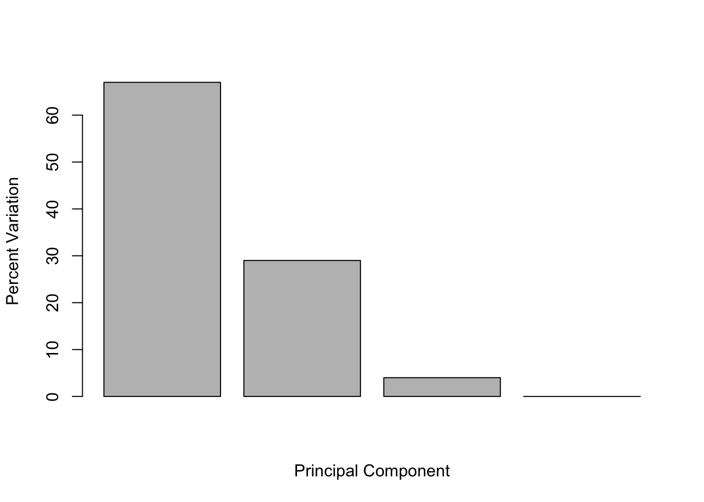

url <- "https://tinyurl.com/UK-foods"
x <- read.csv(url)Class 07
Food in UK
Q1. How many rows and columns are in your new data frame named x? What R functions could you use to answer this questions?
## Complete the following code to find out how many rows and columns are in x?
dim(x)[1] 17 5## Preview the first 6 rows
head(x) X England Wales Scotland N.Ireland
1 Cheese 105 103 103 66
2 Carcass_meat 245 227 242 267
3 Other_meat 685 803 750 586
4 Fish 147 160 122 93
5 Fats_and_oils 193 235 184 209
6 Sugars 156 175 147 139# Note how the minus indexing works
# it 'minus' another row if I run the code again
rownames(x) <- x[,1]
x <- x[,-1]
head(x) England Wales Scotland N.Ireland
Cheese 105 103 103 66
Carcass_meat 245 227 242 267
Other_meat 685 803 750 586
Fish 147 160 122 93
Fats_and_oils 193 235 184 209
Sugars 156 175 147 139dim(x)[1] 17 4x <- read.csv(url, row.names=1)
head(x) England Wales Scotland N.Ireland
Cheese 105 103 103 66
Carcass_meat 245 227 242 267
Other_meat 685 803 750 586
Fish 147 160 122 93
Fats_and_oils 193 235 184 209
Sugars 156 175 147 139Q2. Which approach to solving the ‘row-names problem’ mentioned above do you prefer and why? Is one approach more robust than another under certain circumstances?
I prefer the second way because it gives out the desired dataset using just one line of code rather than a few. Also, I don’t need to worry about assigningxor other values to therownames. If I run the first method several times, it minus 1 row everytime which mess up everything.
#Generating Barplot for spotting trend
barplot(as.matrix(x), beside=T, col=rainbow(nrow(x)))
Q3: Changing what optional argument in the above barplot() function results in the following plot?
Change the beside to FALSE will do it:
barplot(as.matrix(x), beside=FALSE, col=rainbow(nrow(x)))
Q5: Generating all pairwise plots may help somewhat. Can you make sense of the following code and resulting figure? What does it mean if a given point lies on the diagonal for a given plot?
Not sure. Does it mean a positive correlation as does a linear plot?
pairs(x, col=rainbow(10), pch=16)
Q6. What is the main differences between N. Ireland and the other countries of the UK in terms of this data-set?
N.Ireland is consuming less alcoholic-drinks while more fresh-potatoes than the rest (?)
# Use the prcomp() PCA function
pca <- prcomp( t(x) )
summary(pca)Importance of components:
PC1 PC2 PC3 PC4
Standard deviation 324.1502 212.7478 73.87622 4.189e-14
Proportion of Variance 0.6744 0.2905 0.03503 0.000e+00
Cumulative Proportion 0.6744 0.9650 1.00000 1.000e+00Q7. Complete the code below to generate a plot of PC1 vs PC2. The second line adds text labels over the data points.
# Plot PC1 vs PC2
plot(pca$x[, 1], pca$x[, 2], xlab="PC1", ylab="PC2", xlim=c(-270,500))
text(pca$x[,1], pca$x[,2], colnames(x))
Q8. Customize your plot so that the colors of the country names match the colors in our UK and Ireland map and table at start of this document.
country_col <- c("orange", "red", "blue", "green")
plot(pca$x[, 1], pca$x[, 2], xlab="PC1", ylab="PC2", xlim=c(-270,500))
text(pca$x[,1], pca$x[,2], colnames(x), col = country_col)Calculating how much variation each PC accounts for:
v <- round( pca$sdev^2/sum(pca$sdev^2) * 100 )
v[1] 67 29 4 0## or the second row here...
z <- summary(pca)
zImportance of components:
PC1 PC2 PC3 PC4
Standard deviation 324.1502 212.7478 73.87622 4.189e-14
Proportion of Variance 0.6744 0.2905 0.03503 0.000e+00
Cumulative Proportion 0.6744 0.9650 1.00000 1.000e+00z$importance PC1 PC2 PC3 PC4
Standard deviation 324.15019 212.74780 73.87622 4.188568e-14
Proportion of Variance 0.67444 0.29052 0.03503 0.000000e+00
Cumulative Proportion 0.67444 0.96497 1.00000 1.000000e+00barplot(v, xlab="Principal Component", ylab="Percent Variation")
## Lets focus on PC1 as it accounts for > 90% of variance
par(mar=c(10, 3, 0.35, 0))
barplot( pca$rotation[,1], las=2 )
Q9: Generate a similar ‘loadings plot’ for PC2. What two food groups feature prominantely and what does PC2 maninly tell us about?
## Graph for PC2, accounts for > 90% of variance
par(mar=c(10, 3, 0.35, 0))
barplot( pca$rotation[,2], las=2 )
An Alternative Way:
## The inbuilt biplot() can be useful for small datasets
biplot(pca)
RNA sequence
url2 <- "https://tinyurl.com/expression-CSV"
rna.data <- read.csv(url2, row.names=1)
head(rna.data) wt1 wt2 wt3 wt4 wt5 ko1 ko2 ko3 ko4 ko5
gene1 439 458 408 429 420 90 88 86 90 93
gene2 219 200 204 210 187 427 423 434 433 426
gene3 1006 989 1030 1017 973 252 237 238 226 210
gene4 783 792 829 856 760 849 856 835 885 894
gene5 181 249 204 244 225 277 305 272 270 279
gene6 460 502 491 491 493 612 594 577 618 638Q10: How many genes and samples are in this data set?
nrow(rna.data)[1] 100Going straight into PCA analysis:
## Again we have to take the transpose of our data
pca <- prcomp(t(rna.data), scale=TRUE)
## Simple un polished plot of pc1 and pc2
plot(pca$x[,1], pca$x[,2], xlab="PC1", ylab="PC2")
summary(pca)Importance of components:
PC1 PC2 PC3 PC4 PC5 PC6 PC7
Standard deviation 9.6237 1.5198 1.05787 1.05203 0.88062 0.82545 0.80111
Proportion of Variance 0.9262 0.0231 0.01119 0.01107 0.00775 0.00681 0.00642
Cumulative Proportion 0.9262 0.9493 0.96045 0.97152 0.97928 0.98609 0.99251
PC8 PC9 PC10
Standard deviation 0.62065 0.60342 3.348e-15
Proportion of Variance 0.00385 0.00364 0.000e+00
Cumulative Proportion 0.99636 1.00000 1.000e+00This means we reduced 100 dimensions into 1 single dimension PC1 that can account for 92% of the variance, quite impressive.
#Just to visualize how much PC1 accounts for the variance
plot(pca, main="Quick scree plot")
Another way to generate a nicer scree plot:
## Variance captured per PC
pca.var <- pca$sdev^2
## Percent variance is often more informative to look at
pca.var.per <- round(pca.var/sum(pca.var)*100, 1)
pca.var.per [1] 92.6 2.3 1.1 1.1 0.8 0.7 0.6 0.4 0.4 0.0barplot(pca.var.per, main="Scree Plot",
names.arg = paste0("PC", 1:10),
xlab="Principal Component", ylab="Percent Variation")
Make PCA Plot more attractive (so that we look professional:))
## A vector of colors for wt and ko samples
colvec <- colnames(rna.data)
colvec[grep("wt", colvec)] <- "red"
colvec[grep("ko", colvec)] <- "blue"
plot(pca$x[,1], pca$x[,2], col=colvec, pch=16,
xlab=paste0("PC1 (", pca.var.per[1], "%)"),
ylab=paste0("PC2 (", pca.var.per[2], "%)"))
text(pca$x[,1], pca$x[,2], labels = colnames(rna.data), pos=c(rep(4,5), rep(2,5)))
Even more professional – ggplot!
library(ggplot2)
df <- as.data.frame(pca$x)
# Our first basic plot
ggplot(df) +
aes(PC1, PC2) +
geom_point()
Make it nicer:
df$samples <- colnames(rna.data)
df$condition <- substr(colnames(rna.data),1,2)
#Adding 'wt' and 'ko'
p <- ggplot(df) +
aes(PC1, PC2, label=samples, col=condition) +
geom_label(show.legend = FALSE)
#Final polish - add some labels
p + labs(title="PCA of RNASeq Data",
subtitle = "PC1 clealy seperates wild-type from knock-out samples",
x=paste0("PC1 (", pca.var.per[1], "%)"),
y=paste0("PC2 (", pca.var.per[2], "%)"),
caption="Class example data") +
theme_bw()